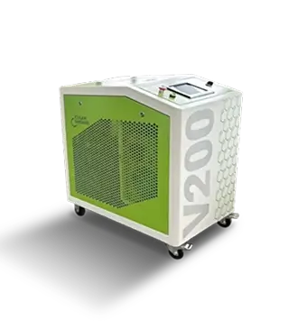
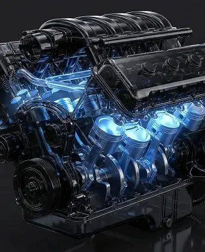

Водородная очистка двигателя в 2АТМ
Водородная очистка двигателя
Водородная очистка двигателя в 2АТМ

Двигатель тупит и ест топливо?
Очисти водородом без разборки
Со временем на клапанах и в камере сгорания накапливается нагар: падает тяга, компрессия становится нестабильной, двигатель греется, растёт расход топлива и масла.
Водородная очистка помогает очистить двигатель за 60 минут без разборки. Это уменьшит расход топлива и вернет более ровную работу двигателя.
Об аппаратной раскоксовке двигателя в 2АТМ
Водородная очистка (раскоксовка) — это технология удаления углеродистых отложений (нагара) с элементов двигателя с помощью водородосодержащего газа, который подаётся во впуск при работающем моторе. Такой газ способствует выгоранию отложений в зоне камеры сгорания, на клапанах и в газоходах.
Как понять, что двигателю нужна очистка?
-
Нестабильная компрессия и падение мощности
-
Рост расхода топлива и масла
-
Провалы при разгоне
-
Рост температуры двигателя
-
Неровный холостой ход, вибрации
-
Тяжёлый запуск, особенно на холодную
-
Ухудшение тяги на низких оборотах
-
Загрязнение свечей и нестабильность искры
Стоимость водородной очистки двигателя в 2АТМ
Стоимость водородной очистки двигателя в санкт-петербурге
Влияние водородинга на узлы автомобиля
Водородная очистка снижает количество углеродистых отложений в зоне сгорания и выхлопа. За счёт уменьшения нагара в камере сгорания, на поршнях и в области клапанов улучшаются условия горения и герметичность посадки клапанов, а также уменьшается риск локальных перегревов, которые могут провоцировать детонацию и перебои.
При снижении закоксовки поршневых колец двигатель чаще работает ровнее, а расход топлива и масла нормализуется, если причина была именно в отложениях.
Дополнительно более стабильное сгорание уменьшает загрязнение свечей, помогает датчикам (в частности лямбда-зонду) давать более ровные показания и снижает нагрузку на элементы выхлопной системы — катализатор, выпускной тракт, а также EGR и турбину, если они установлены.
Преимущества водородной очистки двигателя в сети «Две Атмосферы»
2АТМ об оборудовании для водородной очистки двагателя
Мы работаем на профессиональном оборудовании премиум-класса
Современная установка для водородной очистки позволяет проводить процедуру управляемо и предсказуемо — с постоянным контролем ключевых параметров. Для клиента это означает безопасность, стабильное качество и корректный режим именно для его двигателя, а не «очистку на глаз».
Во время работы оборудование в реальном времени отслеживает давление и температуру, чтобы процесс проходил в допустимых пределах и без перегрузки двигателя.
Важный плюс — точная подача: фиксируется объём газа, подающегося в автомобиль, благодаря чему режим очистки получается дозированным и повторяемым. Дополнительно контролируется время работы установки, что позволяет выдерживать нужную длительность процедуры под конкретный объём и состояние двигателя.

Этапы водородной очистки

-
Короткая диагностика и подготовка
Проверяем базовые параметры и подбираем режим очистки под объём и тип двигателя.
-
Подключение оборудования
Подключаем установку к впускной системе согласно регламенту. Проверяем герметичность соединений и корректность подачи газовой смеси.
-
Подача водородосодержащего газа на работающий двигатель
Двигатель работает на заданных режимах, а газ Брауна (водородно-кислородная смесь) подаётся дозированно через воздухозаборник двигателя. Углеродистые отложения выгорают и выводятся через выхлопную систему
-
Контроль процесса и завершение
Контролируем обороты, температуру, работу двигателя. По завершении — отключаем оборудование и приводим узлы в штатное состояние.
-
Финальная проверка
Проверяем стабильность работы и даём рекомендации по эксплуатации и обслуживанию
Часто задаваемые вопросы
-
-
Информация о безопастности водородной очистки двигателя в 2АТМ
Да, при корректном подключении и соблюдении регламента. Важны дозировка, контроль режимов двигателя и исправное оборудование.
-
-
Информация о разборе двигателя при водородной очистке двигателя в 2АТМ
Нет. Процедура выполняется без разборки: подключение идёт через впуск, очистка происходит в процессе работы двигателя.
-
-
Какие делали двигателя чистятся при водородной очистке в 2АТМ
В первую очередь зона камеры сгорания и поверхности, где накапливается нагар, который влияет на эффективность двигателя и работу клапанов. Объём очищения зависит от степени загрязнения и режима эксплуатации.
-
-
Информация о времени на процедуру очистки двигателя в 2АТМ
Процедура занимает примерно 60 минут, после процедуры вы сразу можете пользоваться автомобилем.
-
-
Информация о поводах и симптомах для процедуру очистки двигателя в 2АТМ
Падение тяги, нестабильный холостой ход, повышенный расход топлива/масла, склонность к перегреву, детонация/перебои, «тяжёлый» запуск, ощущение, что двигатель работает грубее, чем раньше.
-
-
Информация о раскоксовке при масложоре в двигателе автомобиля в 2АТМ
Если причина в нагаре и залегании/закоксовке, то очистка двигателя значительно уменьшит потребление масла. Если причина в износе (кольца, цилиндры, колпачки, турбина и т.д.), то нужна диагностика и ремонт.
-
-
Информация о риск и вред от водорожной очистки даигателя 2АТМ
Риски появляются при нарушении регламента или если у двигателя уже есть серьёзные неисправности. Поэтому наши опытные механики начинают с короткой проверки и подбирают режим под конкретный мотор.
-
-
Информация о замене свечей и масла при услуге водорожной очистки двигателя в 2АТМ
Масло не загрязняется при процедуре. Но если подошел срок замены масла, то можно совместить обе процедуры для максимальной эффективности
-
-
Информация о для каких автомобилей лучше использовать водородну очистку двигателя в 2АТМ
Тем, кто много ездит в городе, часто стоит в пробках, делает короткие поездки, использует топливо/масло переменного качества — то есть там, где нагар накапливается быстрее.
Выбор способа записи в мастерскую 2АТМ
Хотите записаться?
Выбирайте удобный способ!
Наши преимущества
-

Расположение
Сеть наших шиномонтажей и мастерских расположена по всему городу и имеет удобные заезды, парковку и зоны ожидания
-

Приятная цена
Прозрачные цены без скрытых платежей. Первоклассный сервис по выгодным ценам.
-

Скорость
Удобная запись через Telegram. Мы ценим ваше время и отдаем автомобиль точно в обещанное время.
-

Качество
Современное оборудование и опытные мастера гарантируют быстрый и качественный сервис.